JEE Main 2024 (Session 1), 27 Jan Shift 1: worked solutions for review
Questions and options are NTA’s own images; the green option is NTA’s final key. Every solution below was written by Claude
and checked against NTA’s final key. It is not NTA’s solution. Please mark anything unclear or wrong.
Q1 · Mathematics · MCQ · ID 533543377
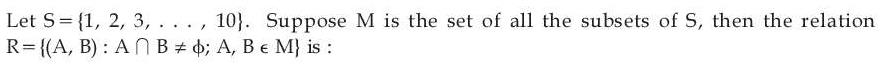
Hint 1: Test each property with small sets. What happens with A = ∅?
Hint 2: Reflexive needs A ∩ A ≠ ∅ for every A, including ∅. For transitivity, try A = {1}, B = {1, 2}, C = {2}.
What this tests: Properties of a relation on subsets.
1. ∅ ∩ ∅ = ∅, so (∅, ∅) ∉ R: not reflexive.
2. A ∩ B = B ∩ A, so R is symmetric.
3. {1} meets {1, 2} and {1, 2} meets {2}, but {1} ∩ {2} = ∅: not transitive.
4. Symmetric only.
Answer: (3)
If this felt hard: Revise 'Relations and Functions'. The empty set is the usual counterexample for reflexivity.
Claude’s answer: 3 · NTA final key: 3 · agrees · Answer recomputed with SymPy (tools/verify_pyq_solutions.py)
Q2 · Mathematics · MCQ · ID 533543378
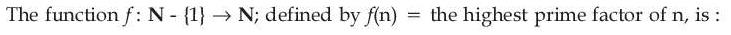
Hint 1: Find two numbers with the same highest prime factor. Is every natural number a prime?
Hint 2: f(2) = f(4) = 2. The output of f is always a prime.
What this tests: One-one and onto functions.
1. f(2) = f(4), so f is not one-one.
2. Non-primes such as 1 or 4 are never outputs, so f is not onto N.
Answer: (4)
If this felt hard: Revise 'Relations and Functions'.
Claude’s answer: 4 · NTA final key: 4 · agrees · Answer recomputed with SymPy (tools/verify_pyq_solutions.py)
Q3 · Mathematics · MCQ · ID 533543379
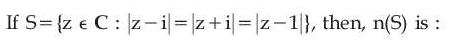
(2) 
(3) 
(4) 
Hint 1: Each equality |z − a| = |z − b| is a perpendicular bisector. Which two lines do you get?
Hint 2: |z − i| = |z + i| is the real axis (y = 0). |z − i| = |z − 1| is the line y = x.
What this tests: Loci in the complex plane (perpendicular bisectors).
1. The two lines meet only at z = 0.
2. Check: |0 − i| = |0 + i| = |0 − 1| = 1.
3. n(S) = 1.
Answer: (2)
If this felt hard: Revise 'Complex Numbers' (geometry of |z − a| = |z − b|).
Claude’s answer: 2 · NTA final key: 2 · agrees · Answer recomputed with SymPy (tools/verify_pyq_solutions.py)
Q4 · Mathematics · MCQ · ID 533543380
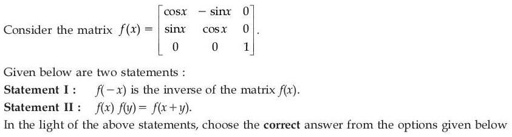
(1) 
(2) 
(3) 
(4) 
Hint 1: f(x) is a rotation by angle x in the xy-plane. What do rotations do when combined or undone?
Hint 2: Multiply f(x)f(y) and use the compound-angle formulas.
What this tests: Rotation matrices; matrix inverse.
1. f(x)f(y) has entries cos x cos y − sin x sin y = cos(x + y), etc., so f(x)f(y) = f(x + y). II is true.
2. Then f(x)f(−x) = f(0) = I, so f(−x) is the inverse of f(x). I is true.
Answer: (1)
If this felt hard: Revise 'Matrices' and compound-angle formulas.
Claude’s answer: 1 · NTA final key: 1 · agrees · Answer recomputed with SymPy (tools/verify_pyq_solutions.py)
Q5 · Mathematics · MCQ · ID 533543381
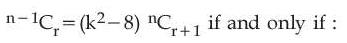
Hint 1: Relate C(n, r + 1) to C(n − 1, r).
Hint 2: C(n, r + 1) = (n/(r + 1)) C(n − 1, r), so k² − 8 = (r + 1)/n.
What this tests: Binomial coefficient identities.
1. Since 0 ≤ r ≤ n − 1, (r + 1)/n lies in (0, 1].
2. 0 < k² − 8 ≤ 1, so 8 < k² ≤ 9.
3. For positive k: 2√2 < k ≤ 3.
Answer: (1)
If this felt hard: Revise 'Binomial Theorem' / 'Permutations and Combinations'.
Claude’s answer: 1 · NTA final key: 1 · agrees · Answer recomputed with SymPy (tools/verify_pyq_solutions.py)
Q6 · Mathematics · MCQ · ID 533543382
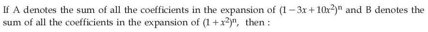
Hint 1: The sum of all coefficients of a polynomial p(x) is p(1).
Hint 2: A = (1 − 3 + 10)ⁿ and B = (1 + 1)ⁿ.
What this tests: Sum of binomial coefficients.
1. A = 8ⁿ = (2ⁿ)³ and B = 2ⁿ.
2. A = B³.
Answer: (2)
If this felt hard: Revise 'Binomial Theorem'.
Claude’s answer: 2 · NTA final key: 2 · agrees · Answer recomputed with SymPy (tools/verify_pyq_solutions.py)
Q7 · Mathematics · MCQ · ID 533543383
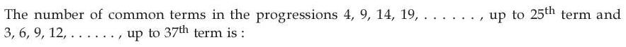
(2) 
(3) 
(4) 
Hint 1: Find the last term of each progression, then the first common term and the common difference of the common terms.
Hint 2: First: 4, 9, …, 124 (d = 5). Second: 3, 6, …, 111 (d = 3). Common terms form an AP with d = LCM(5, 3) = 15.
What this tests: Common terms of two APs.
1. The first common term is 9.
2. 9 + 15j ≤ 111 gives j ≤ 6, so j = 0, …, 6.
3. 7 common terms.
Answer: (2)
If this felt hard: Revise 'Sequences and Series'. The smaller last term limits the count.
Claude’s answer: 2 · NTA final key: 2 · agrees · Answer recomputed with SymPy (tools/verify_pyq_solutions.py)
Q8 · Mathematics · MCQ · ID 533543384
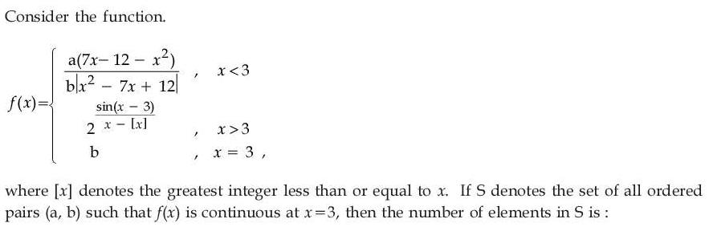
(1) 
(3) 
(4) 
Hint 1: Find the left limit, the right limit and f(3), and set them equal.
Hint 2: For x slightly less than 3, x² − 7x + 12 = (x − 3)(x − 4) > 0 and 7x − 12 − x² is its negative. For x slightly more than 3, x − [x] = x − 3.
What this tests: Continuity with modulus and greatest integer functions.
1. Left limit: −a/b. Right limit: 21 = 2. f(3) = b.
2. b = 2 and −a/2 = 2, so a = −4.
3. Exactly one pair (a, b) = (−4, 2).
Answer: (3)
If this felt hard: Revise 'Continuity and Differentiability'.
Claude’s answer: 3 · NTA final key: 3 · agrees · Answer recomputed with SymPy (tools/verify_pyq_solutions.py)
Q9 · Mathematics · MCQ · ID 533543385
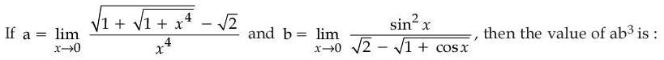
(2) 
(3) 
(4) 
Hint 1: Both limits are 0/0. Rationalise, or use small-x approximations.
Hint 2: √(1 + t) ≈ 1 + t/2 for small t. Also 1 + cos x ≈ 2 − x²/2.
What this tests: Limits by rationalisation or series approximation.
1. a: √(1 + √(1 + x⁴)) ≈ √(2 + x⁴/2) ≈ √2(1 + x⁴/8), so a = √2/8 = 1/(4√2).
2. b: √(1 + cos x) ≈ √2(1 − x²/8), so the denominator ≈ √2x²/8 and b = 8/√2 = 4√2.
3. ab³ = (4√2)³/(4√2) = 32.
Answer: (4)
If this felt hard: Revise 'Limits and Derivatives'.
Claude’s answer: 4 · NTA final key: 4 · agrees · Answer recomputed with SymPy (tools/verify_pyq_solutions.py)
Q10 · Mathematics · MCQ · ID 533543386
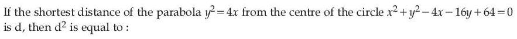
(2) 
(3) 
(4) 
Hint 1: Take a point (t², 2t) on the parabola and minimise its squared distance from the centre.
Hint 2: Centre (2, 8). D(t) = (t² − 2)² + (2t − 8)². Set D'(t) = 0.
What this tests: Shortest distance from a point to a parabola.
1. D'(t) = 4t(t² − 2) + 4(2t − 8) = 4t³ − 32 = 0, so t = 2.
2. Nearest point (4, 4): d² = 4 + 16 = 20.
Answer: (2)
If this felt hard: Revise 'Conic Sections' and 'Application of Derivatives' (minima).
Claude’s answer: 2 · NTA final key: 2 · agrees · Answer recomputed with SymPy (tools/verify_pyq_solutions.py)
Q11 · Mathematics · MCQ · ID 533543387
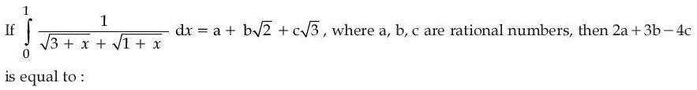
(2) 
(3) 
(4) 
Hint 1: Rationalise the denominator first. What is (3 + x) − (1 + x)?
Hint 2: 1/(√(3 + x) + √(1 + x)) = (√(3 + x) − √(1 + x))/2.
What this tests: Definite integral after rationalising.
1. Integral = (1/2) × (2/3)[(3 + x)3/2 − (1 + x)3/2] from 0 to 1.
2. = (1/3)[(8 − 2√2) − (3√3 − 1)] = 3 − (2/3)√2 − √3.
3. a = 3, b = −2/3, c = −1: 2a + 3b − 4c = 6 − 2 + 4 = 8.
Answer: (3)
If this felt hard: Revise 'Integrals'.
Claude’s answer: 3 · NTA final key: 3 · agrees · Answer recomputed with SymPy (tools/verify_pyq_solutions.py)
Q12 · Mathematics · MCQ · ID 533543388
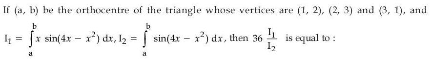
(2) 
(3) 
(4) 
Hint 1: Find the orthocentre first. Then look at sin(4x − x²) under x → (a + b) − x.
Hint 2: Orthocentre (5/3, 7/3), so a + b = 4. 4x − x² is unchanged when x is replaced by 4 − x.
What this tests: Orthocentre; the property ∫ab f(x) dx = ∫ab f(a + b − x) dx.
1. With x → 4 − x: I1 = ∫(4 − x) sin(4x − x²) dx = 4I2 − I1, so I1 = 2I2.
2. 36 I1/I2 = 72.
Answer: (1)
If this felt hard: Revise 'Straight Lines' (orthocentre) and 'Integrals' (properties of definite integrals).
Claude’s answer: 1 · NTA final key: 1 · agrees · Answer recomputed with SymPy (tools/verify_pyq_solutions.py)
Q13 · Mathematics · MCQ · ID 533543389
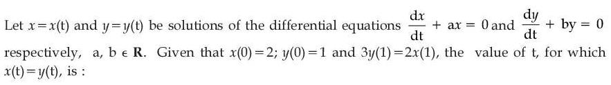
Hint 1: Both equations are simple exponential decays. Write x(t) and y(t).
Hint 2: x = 2e−at, y = e−bt. The condition 3y(1) = 2x(1) gives ea−b = 4/3.
What this tests: First-order linear differential equations (exponential solutions).
1. x(t) = y(t): 2e−at = e−bt, so e(a−b)t = 2.
2. (4/3)t = 2, so t = log4/32.
Answer: (3)
If this felt hard: Revise 'Differential Equations'.
Claude’s answer: 3 · NTA final key: 3 · agrees · Answer recomputed with SymPy (tools/verify_pyq_solutions.py)
Q14 · Mathematics · MCQ · ID 533543390
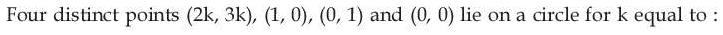
Hint 1: Find the circle through (0, 0), (1, 0) and (0, 1), then put (2k, 3k) on it.
Hint 2: The circle is x² + y² − x − y = 0.
What this tests: Concyclic points.
1. 4k² + 9k² − 2k − 3k = 0, so 13k² = 5k.
2. k ≠ 0 (the points are distinct), so k = 5/13.
Answer: (4)
If this felt hard: Revise 'Conic Sections' (circle).
Claude’s answer: 4 · NTA final key: 4 · agrees · Answer recomputed with SymPy (tools/verify_pyq_solutions.py)
Q15 · Mathematics · MCQ · ID 533543391
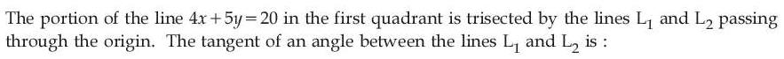
(1) 
Hint 1: The intercepts are (5, 0) and (0, 4). Find the two trisection points.
Hint 2: Trisection points: (10/3, 4/3) and (5/3, 8/3). Lines through the origin have slopes 2/5 and 8/5.
What this tests: Section formula; angle between two lines.
1. tan θ = (8/5 − 2/5)/(1 + 16/25) = (6/5)/(41/25) = 30/41.
Answer: (4)
If this felt hard: Revise 'Straight Lines'.
Claude’s answer: 4 · NTA final key: 4 · agrees · Answer recomputed with SymPy (tools/verify_pyq_solutions.py)
Q16 · Mathematics · MCQ · ID 533543392
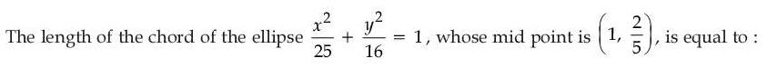
(1)
(2)
(3)
(4)
Hint 1: Write the chord with a given midpoint using T = S1, then intersect it with the ellipse.
Hint 2: Chord: x/25 + (2/5)y/16 = 1/25 + (4/25)/16, i.e. 8x + 5y = 10.
What this tests: Chord of an ellipse with a given midpoint; chord length.
1. Substituting: 4x² − 8x − 15 = 0, so (x1 − x2)² = 4 + 15 = 19.
2. Slope −8/5, so length² = 19(1 + 64/25) = 1691/25.
3. Length = √1691/5.
Answer: (3)
If this felt hard: Revise 'Conic Sections' (ellipse).
Claude’s answer: 3 · NTA final key: 3 · agrees · Answer recomputed with SymPy (tools/verify_pyq_solutions.py)
Q17 · Mathematics · MCQ · ID 533543393
(1)
(2) 
(3) 
(4) 
Hint 1: Move from the point along the direction (2, −3, 6) until you hit the first line.
Hint 2: Point on the path: (7 + 2t, −2 − 3t, 11 + 6t). The first line has y = 4 always.
What this tests: Distance from a point to a line measured along a given direction.
1. −2 − 3t = 4 gives t = −2, point (3, 4, −1). It is on the line (s = −3 gives x = 3, z = −1).
2. Distance = |t| × |(2, −3, 6)| = 2 × 7 = 14.
Answer: (2)
If this felt hard: Revise 'Three Dimensional Geometry'.
Claude’s answer: 2 · NTA final key: 2 · agrees · Answer recomputed with SymPy (tools/verify_pyq_solutions.py)
Q18 · Mathematics · MCQ · ID 533543394
(1) 
(2)
(3) 
(4) 
Hint 1: Use SD = |(B − A)·(d1 × d2)|/|d1 × d2|.
Hint 2: d1 × d2 = (2, −1, 0), length √5. B − A = (λ − 4, 0, 2).
What this tests: Shortest distance between skew lines.
1. |2(λ − 4)|/√5 = 6/√5, so |λ − 4| = 3.
2. λ = 7 or 1; sum = 8.
Answer: (3)
If this felt hard: Revise 'Three Dimensional Geometry'.
Claude’s answer: 3 · NTA final key: 3 · agrees · Answer recomputed with SymPy (tools/verify_pyq_solutions.py)
Q19 · Mathematics · MCQ · ID 533543395
(1)
(2) 
(3) 
(4) 
Hint 1: Take a × (a × c) and expand it with the BAC–CAB rule to solve for c.
Hint 2: a × (a × c) = (a·c)a − |a|²c = a × b, so c = ((a·c)a − a × b)/|a|².
What this tests: Solving vector equations with cross products.
1. a × b = (9, 0, −9), |a|² = 6, so c = (3a − (9, 0, −9))/6 = (−1, 1, 2).
2. c × b = (9, 9, 0), so a·(c × b) = 27. a·b = 0, a·c = 3.
3. 27 − 0 − 3 = 24.
Answer: (2)
If this felt hard: Revise 'Vector Algebra' (vector triple product).
Claude’s answer: 2 · NTA final key: 2 · agrees · Answer recomputed with SymPy (tools/verify_pyq_solutions.py)
Q20 · Mathematics · MCQ · ID 533543396
(1) 
(2) 
(3)
(4)
Hint 1: You need Σak². How is (Σak)² related to Σak² and the sum over pairs?
Hint 2: (Σak)² = Σak² + 2Σk<j akaj.
What this tests: Variance from sums.
1. Σak² = 2500 − 2200 = 300.
2. Variance = 300/10 − 5² = 5.
3. SD = √5.
Answer: (3)
If this felt hard: Revise 'Statistics'.
Claude’s answer: 3 · NTA final key: 3 · agrees · Answer recomputed with SymPy (tools/verify_pyq_solutions.py)
Q21 · Mathematics · Numerical · ID 533543397
Hint 1: α is a complex cube root of unity, ω. Simplify 1 + ω first.
Hint 2: 1 + ω = −ω², so (1 + ω)⁷ = −ω14 = −ω². Then write −ω² with non-negative coefficients using 1 + ω + ω² = 0.
What this tests: Cube roots of unity.
1. −ω² = 1 + ω, so A = 1, B = 1, C = 0.
2. 5(3 − 2 − 0) = 5.
Answer: 5
If this felt hard: Revise 'Complex Numbers' (cube roots of unity).
Claude’s answer: 5 · NTA final key: 5 · agrees · Answer recomputed with SymPy (tools/verify_pyq_solutions.py)
Q22 · Mathematics · Numerical · ID 533543398
Hint 1: AB is the matrix whose columns are the given AB1, AB2, AB3. So B = A−1(AB).
Hint 2: det A = 1 and det(AB) = 3, so |B| = 3. A−1 = [[1, 0, −1], [−1, 1, 1], [−1, 0, 2]].
What this tests: Matrix products column by column; determinant and inverse.
1. B = A−1[[1, 2, 3], [0, 3, 2], [0, 0, 1]] = [[1, 2, 2], [−1, 1, 0], [−1, −2, −1]].
2. α = 3, β = 1 + 1 − 1 = 1.
3. α³ + β³ = 28.
Answer: 28
If this felt hard: Revise 'Matrices' and 'Determinants'.
Claude’s answer: 28 · NTA final key: 28 · agrees · Answer recomputed with SymPy (tools/verify_pyq_solutions.py)
Q23 · Mathematics · Numerical · ID 533543399
Hint 1: The inequality holds for all x, y. Swap x and y: what do you get?
Hint 2: Swapping gives f(y) − f(x) ≥ ln(y/x) + y − x, so equality holds: f(x) − ln x − x is constant.
What this tests: Functional inequality forced to equality; sum of squares.
1. f(x) = ln x + x + C, so f'(x) = 1/x + 1.
2. f'(1/n²) = n² + 1.
3. Σn=120 (n² + 1) = 2870 + 20 = 2890.
Answer: 2890
If this felt hard: Revise 'Continuity and Differentiability' and 'Sequences and Series'.
Claude’s answer: 2890 · NTA final key: 2890 · agrees · Answer recomputed with SymPy (tools/verify_pyq_solutions.py)
Q24 · Mathematics · Numerical · ID 533543400
Hint 1: Split each term (3 + kp)/4k into a GP part and an arithmetico-geometric part.
Hint 2: Σk≥1 3/4k = 1 and Σk≥1 k/4k = (1/4)/(1 − 1/4)² = 4/9.
What this tests: Infinite GP and arithmetico-geometric series.
1. 8 = 3 + 1 + (4/9)p.
2. p = 9.
Answer: 9
If this felt hard: Revise 'Sequences and Series'.
Claude’s answer: 9 · NTA final key: 9 · agrees · Answer recomputed with SymPy (tools/verify_pyq_solutions.py)
Q25 · Mathematics · Numerical · ID 533543401
Hint 1: f'(1), f''(2), f'''(3) are just constants. Call them a, b, c and differentiate.
Hint 2: f = x³ + ax² + bx + c, f' = 3x² + 2ax + b, f'' = 6x + 2a, f''' = 6.
What this tests: Polynomial with unknown derivative constants.
1. c = 6. b = f''(2) = 12 + 2a. a = f'(1) = 3 + 2a + b.
2. a = 3 + 2a + 12 + 2a, so a = −5 and b = 2.
3. f'(10) = 300 − 100 + 2 = 202.
Answer: 202
If this felt hard: Revise 'Limits and Derivatives' (derivatives of polynomials).
Claude’s answer: 202 · NTA final key: 202 · agrees · Answer recomputed with SymPy (tools/verify_pyq_solutions.py)
Q26 · Mathematics · Numerical · ID 533543402
Hint 1: Integrate along y (horizontal strips). Which curve is the left boundary, and where does it change?
Hint 2: Left boundary: x = −2y² for y ≤ 1, x = 2y − 4 for y ≥ 1. Right boundary: x = 8 − 4y². The line meets x = 8 − 4y² at y = 3/2.
What this tests: Area of a region bounded by parabolas and a line.
1. ∫01 (8 − 4y² + 2y²) dy = 22/3.
2. ∫13/2 (8 − 4y² − 2y + 4) dy = 19/12.
3. Area = 88/12 + 19/12 = 107/12, so m + n = 119.
Answer: 119
If this felt hard: Revise 'Application of Integrals'. Horizontal strips are easier when the curves are x = f(y).
Claude’s answer: 119 · NTA final key: 119 · agrees · Answer recomputed with SymPy (tools/verify_pyq_solutions.py)
Q27 · Mathematics · Numerical · ID 533543403
Hint 1: 2x + 3y appears in both brackets. Substitute u = 2x + 3y.
Hint 2: du = 2dx + 3dy. The equation becomes (8 − u)dx + (2u − 7)du = 0, i.e. dx = (2 + 9/(u − 8))du.
What this tests: Differential equation reducible by substitution u = ax + by.
1. x = 2u + 9 ln|u − 8| + C, so x + 2y + 3 ln|2x + 3y − 8| = constant.
2. y(0) = 3: 6 + 3 ln 1 = 6, matching '= 6'.
3. α = 1, β = 2, γ = 8: 1 + 4 + 24 = 29.
Answer: 29
If this felt hard: Revise 'Differential Equations'.
Claude’s answer: 29 · NTA final key: 29 · agrees · Answer recomputed with SymPy (tools/verify_pyq_solutions.py)
Q28 · Mathematics · Numerical · ID 533543404
Hint 1: Acute angle means a positive dot product (and the vectors are not in the same direction).
Hint 2: Dot product = α² − 4α − 4 > 0.
What this tests: Angle between vectors via the dot product.
1. α > 2 + 2√2 ≈ 4.83 (or α < 2 − 2√2, negative).
2. Least positive integer: 5.
Answer: 5
If this felt hard: Revise 'Vector Algebra'.
Claude’s answer: 5 · NTA final key: 5 · agrees · Answer recomputed with SymPy (tools/verify_pyq_solutions.py)
Q29 · Mathematics · Numerical · ID 533543405
Hint 1: X is geometric with p = 1/6. Write each probability with powers of 5/6.
Hint 2: P(X = 3) = (5/6)²(1/6). P(X ≥ k) = (5/6)k−1. Use the memoryless property for c.
What this tests: Geometric distribution; conditional probability.
1. a = 25/216, b = (5/6)² = 25/36.
2. c = P(X ≥ 6)/P(X ≥ 4) = (5/6)⁵/(5/6)³ = 25/36.
3. (b + c)/a = (50/36) × (216/25) = 12.
Answer: 12
If this felt hard: Revise 'Probability'.
Claude’s answer: 12 · NTA final key: 12 · agrees · Answer recomputed with SymPy (tools/verify_pyq_solutions.py)
Q30 · Mathematics · Numerical · ID 533543406
Hint 1: Write cos 2x = 1 − 2sin²x and factor the quadratic in s = sin x.
Hint 2: 2s² − as + 2a − 8 = (s − 2)(2s + 4 − a) = 0. For r, pair tan 9° with tan 81° = cot 9°, and tan 27° with tan 63° = cot 27°.
What this tests: Trigonometric equations; special-angle values (18°, 54°).
1. s = 2 is impossible, so sin x = (a − 4)/2 must be in [−1, 1]: a ∈ [2, 6].
2. tan θ + cot θ = 2/sin 2θ, so r = 2/sin 18° − 2/sin 54°.
3. sin 54° − sin 18° = 1/2 and sin 18° sin 54° = 1/4, so r = 2 × (1/2)/(1/4) = 4.
4. pqr = 2 × 6 × 4 = 48.
Answer: 48
If this felt hard: Revise 'Trigonometric Functions'.
Claude’s answer: 48 · NTA final key: 48 · agrees · Answer recomputed with SymPy (tools/verify_pyq_solutions.py)
Q31 · Physics · MCQ · ID 533543407
(1)
(2) 
(3) 
(4) 
Hint 1: Write the dimensions from E = hν, L = mvr, p = mv and τ = r × F.
Hint 2: [h] = [E]/[ν] = ML²T−1. [L] = ML²T−1. [p] = MLT−1. [τ] = ML²T−2.
What this tests: Dimensional formulae.
1. h and angular momentum match: Statement I is true.
2. Momentum and torque differ: Statement II is false.
Answer: (3)
If this felt hard: Revise 'Units and Measurements'.
Claude’s answer: 3 · NTA final key: 3 · agrees · Theory question: not computable, needs a teacher’s review
Q32 · Physics · MCQ · ID 533543408
(1)
(2)
(3)
(4)
Hint 1: Velocity is the time derivative of the position vector.
Hint 2: v = dS/dt = 4t ĵ (the 5k̂ part is constant).
What this tests: Velocity from a position vector.
1. At t = 1 s, v = 4ĵ m/s: 4 m/s in the y-direction.
Answer: (3)
If this felt hard: Revise 'Motion in a Plane'.
Claude’s answer: 3 · NTA final key: 3 · agrees · Answer recomputed by script (tools/verify_pyq_solutions.py)
Q33 · Physics · MCQ · ID 533543409
(1)
(2) 
(3) 
(4) 
Hint 1: No horizontal external force acts when the mass is added. What is conserved?
Hint 2: Momentum: 1000 × 6 = 1200 × v.
What this tests: Conservation of linear momentum (variable mass).
1. v = 6000/1200 = 5 m/s.
Answer: (2)
If this felt hard: Revise 'Laws of Motion'.
Claude’s answer: 2 · NTA final key: 2 · agrees · Answer recomputed by script (tools/verify_pyq_solutions.py)
Q34 · Physics · MCQ · ID 533543410
(1)
(2)
(3)
(4)
Hint 1: For banking with no friction needed, tan θ = v²/(rg). For small θ, height = (track width) × tan θ.
Hint 2: tan θ = 144/(400 × 10) = 0.036.
What this tests: Banking of railway tracks.
1. h = 1.5 × 0.036 = 0.054 m = 5.4 cm.
Answer: (3)
If this felt hard: Revise 'Laws of Motion' (circular motion, banking).
Claude’s answer: 3 · NTA final key: 3 · agrees · Answer recomputed by script (tools/verify_pyq_solutions.py)
Q35 · Physics · MCQ · ID 533543411
(1)
(2)
(3)
(4)
Hint 1: Write p in terms of kinetic energy K and mass m.
Hint 2: p = √(2mK). With equal K, p ∝ √m.
What this tests: Relation between momentum and kinetic energy.
1. p1/p2 = √(4/25) = 2/5.
Answer: (1)
If this felt hard: Revise 'Work, Energy and Power'.
Claude’s answer: 1 · NTA final key: 1 · agrees · Answer recomputed by script (tools/verify_pyq_solutions.py)
Q36 · Physics · MCQ · ID 533543412
(1)
(2) 
(3) 
(4)
Hint 1: g = GM/R². What happens to R when the diameter halves?
Hint 2: R becomes R/2 and M stays the same.
What this tests: Acceleration due to gravity and the Earth's radius.
1. g' = GM/(R/2)² = 4GM/R² = 4g.
Answer: (1)
If this felt hard: Revise 'Gravitation'.
Claude’s answer: 1 · NTA final key: 1 · agrees · Answer recomputed by script (tools/verify_pyq_solutions.py)
Q37 · Physics · MCQ · ID 533543413
(1) 
(2) 
(3)
(4) 
Hint 1: Compare the viscosity of air and water. How do impurities affect surface tension?
Hint 2: Gases have much lower viscosity than liquids. Impurities at the surface lower surface tension.
What this tests: Viscosity; factors affecting surface tension.
1. Statement I is incorrect: liquids are far more viscous than gases.
2. Statement II is correct: impurities (contamination) lower the surface tension of a liquid.
Answer: (4)
If this felt hard: Revise 'Mechanical Properties of Fluids'.
Claude’s answer: 4 · NTA final key: 4 · agrees · Theory question: not computable, needs a teacher’s review
Note: Statement II as accepted by NTA; textbooks usually say soluble surface-active impurities lower surface tension. Worth a teacher look.
Q38 · Physics · MCQ · ID 533543414
(1)
(2)
(3)
(4)
Hint 1: At constant volume, all the heat goes into internal energy.
Hint 2: ΔU = mcvΔT, then convert kcal to J.
What this tests: First law at constant volume.
1. ΔU = 0.08 × 0.17 × 5 = 0.068 kcal = 68 cal.
2. 68 × 4.18 ≈ 284 J.
Answer: (2)
If this felt hard: Revise 'Thermal Properties of Matter' and 'Thermodynamics'.
Claude’s answer: 2 · NTA final key: 2 · agrees · Answer recomputed by script (tools/verify_pyq_solutions.py)
Q39 · Physics · MCQ · ID 533543415
(1)
(2)
(3)
(4)
Hint 1: Average KE of a monoatomic molecule is (3/2)kBT.
Hint 2: 0.414 eV = 0.414 × 1.6 × 10−19 J.
What this tests: Kinetic interpretation of temperature.
1. T = 2 × 0.414 × 1.6 × 10−19/(3 × 1.38 × 10−23).
2. T ≈ 3200 K.
Answer: (4)
If this felt hard: Revise 'Kinetic Theory'.
Claude’s answer: 4 · NTA final key: 4 · agrees · Answer recomputed by script (tools/verify_pyq_solutions.py)
Q40 · Physics · MCQ · ID 533543416
(1)
(2)
(3)
(4)
Hint 1: The potential of a point charge depends only on the distance from it.
Hint 2: |OP| = √(3 + 3) = √6 m and |OQ| = √6 m.
What this tests: Equipotential surfaces of a point charge.
1. Both points are the same distance from the charge, so VP = VQ.
2. Potential difference = 0.
Answer: (3)
If this felt hard: Revise 'Electrostatic Potential and Capacitance'.
Claude’s answer: 3 · NTA final key: 3 · agrees · Answer recomputed by script (tools/verify_pyq_solutions.py)
Q41 · Physics · MCQ · ID 533543417
(1)
(2)
(3)
(4)
Hint 1: Each piece has one-fifth of the length. What is each piece's resistance?
Hint 2: Each part: R/5. Five equal resistors in parallel: (R/5)/5.
What this tests: Resistance in series and parallel.
1. Resultant = R/25.
Answer: (2)
If this felt hard: Revise 'Current Electricity'.
Claude’s answer: 2 · NTA final key: 2 · agrees · Answer recomputed by script (tools/verify_pyq_solutions.py)
Q42 · Physics · MCQ · ID 533543418
(1)
(2)
(3)
(4)
Hint 1: The net force qE + q(v × B) must be zero. Check each case.
Hint 2: v × B = 0 when v is parallel to B. E and v × B can cancel when both are present (crossed fields).
What this tests: Lorentz force; velocity selector.
1. A: no fields, no force: possible.
2. B: B ≠ 0 with v along B gives no force: possible.
3. C: E ≠ 0 alone always pushes the proton: not possible.
4. D: qE = −q(v × B) in crossed fields (velocity selector): possible.
Answer: (3)
If this felt hard: Revise 'Moving Charges and Magnetism'.
Claude’s answer: 3 · NTA final key: 3 · agrees · Theory question: not computable, needs a teacher’s review
Q43 · Physics · MCQ · ID 533543419
(1)
(2)
(3)
(4)
Hint 1: Average emf = −(change in flux)/(time taken).
Hint 2: Initial flux Φ = BA cos 60° = 4 × 5 × 1/2 = 10 Wb. Final flux = 0.
What this tests: Faraday's law (average emf).
1. ε = −(0 − 10)/10 = +1 V.
Answer: (2)
If this felt hard: Revise 'Electromagnetic Induction'.
Claude’s answer: 2 · NTA final key: 2 · agrees · Answer recomputed by script (tools/verify_pyq_solutions.py)
Note: Takes 60° as the angle between the field and the loop's normal, as NTA's key does.
Q44 · Physics · MCQ · ID 533543420
(1)
(2)
(3)
(4)
Hint 1: Intensity of an EM wave = (1/2)ε0cE0².
Hint 2: E0 = 200 V/m. Wave speed = 1.5 × 10⁷/0.05 = 3 × 10⁸ m/s.
What this tests: Intensity of an electromagnetic wave.
1. I = 0.5 × 8.85 × 10−12 × 3 × 10⁸ × 200².
2. = 0.5 × 8.85 × 10−12 × 1.2 × 1013 ≈ 53.1 W/m².
Answer: (1)
If this felt hard: Revise 'Electromagnetic Waves'.
Claude’s answer: 1 · NTA final key: 1 · agrees · Answer recomputed by script (tools/verify_pyq_solutions.py)
Q45 · Physics · MCQ · ID 533543421
(1)
(2)
(3)
(4)
Hint 1: Use μ = sin((A + δm)/2)/sin(A/2) and write cot(A/2) as cos(A/2)/sin(A/2).
Hint 2: sin((A + δm)/2) = cos(A/2) = sin(π/2 − A/2).
What this tests: Prism at minimum deviation.
1. (A + δm)/2 = π/2 − A/2.
2. δm = π − 2A.
Answer: (1)
If this felt hard: Revise 'Ray Optics and Optical Instruments'.
Claude’s answer: 1 · NTA final key: 1 · agrees · Answer recomputed with SymPy (tools/verify_pyq_solutions.py)
Q46 · Physics · MCQ · ID 533543422
(1)
(2)
(3)
(4)
Hint 1: The photocurrent depends on how much light energy reaches the cell. What decides how much light a lens collects?
Hint 2: The light collected depends on the lens's aperture (diameter), not its focal length. The image size changes, but the total light in it does not.
What this tests: Photoelectric current and light intensity; lens aperture.
1. Same diameter, so the same power reaches the cell.
2. The photocurrent stays I.
Answer: (2)
If this felt hard: Revise 'Dual Nature of Radiation and Matter' and 'Ray Optics'.
Claude’s answer: 2 · NTA final key: 2 · agrees · Theory question: not computable, needs a teacher’s review
Q47 · Physics · MCQ · ID 533543423
(1)
(2)
(3)
(4)
Hint 1: In Bohr's model, how does orbit radius depend on n?
Hint 2: r ∝ n².
What this tests: Bohr model radii.
1. r4/r3 = 16/9, so r4 = (16/9)R.
Answer: (2)
If this felt hard: Revise 'Atoms'.
Claude’s answer: 2 · NTA final key: 2 · agrees · Answer recomputed by script (tools/verify_pyq_solutions.py)
Q48 · Physics · MCQ · ID 533543424
(1)
(2)
(3)
(4)
Hint 1: In the diode symbol the triangle (p side) points to the bar (n side). Reverse bias means the p side is at a lower potential.
Hint 2: Compare the potentials on the two ends of each diode.
What this tests: Forward and reverse bias of a p-n junction.
1. In the last circuit the p side is at +2 V and the n side connects (through the resistor) to +4 V.
2. The n side is higher, so that diode is reverse biased. In the others the p side is at the higher potential.
Answer: (4)
If this felt hard: Revise 'Semiconductor Electronics'.
Claude’s answer: 4 · NTA final key: 4 · agrees · Theory question: not computable, needs a teacher’s review
Note: Figure reading of the diode directions.
Q49 · Physics · MCQ · ID 533543425
(1)
(2)
(3)
(4)
Hint 1: What does a spherometer actually measure? A small height (sagitta) of a surface.
Hint 2: From that height it gives the radius of curvature of curved surfaces and the thickness of thin plates.
What this tests: Experimental skills: spherometer.
1. Radii of convex and concave surfaces and thin-plate thickness can be measured.
2. Specific rotation of a liquid needs a polarimeter.
Answer: (3)
If this felt hard: Revise the spherometer experiment (NCERT lab manual).
Claude’s answer: 3 · NTA final key: 3 · agrees · Theory question: not computable, needs a teacher’s review
Q50 · Physics · MCQ · ID 533543426
(1)
(2)
(3)
(4) 
Hint 1: Use the balance condition of the metre bridge to find the wire's resistance, then ρ = RA/L.
Hint 2: 4.5/X = 60/40. A = π r² = π × 7 × 10−8 m², L = 0.1 m.
What this tests: Metre bridge; resistivity.
1. X = 4.5 × 40/60 = 3 Ω.
2. ρ = 3 × (22/7) × 7 × 10−8/0.1 = 66 × 10−7 Ω m.
3. R = 66.
Answer: (3)
If this felt hard: Revise 'Current Electricity' (metre bridge).
Claude’s answer: 3 · NTA final key: 3 · agrees · Answer recomputed by script (tools/verify_pyq_solutions.py)
Note: Uses π = 22/7.
Q51 · Physics · Numerical · ID 533543427
Hint 1: Use the x-motion to find the time first.
Hint 2: x = 5t + (3/2)t² = 84. Then vx = 5 + 3t and vy = 2t.
What this tests: Motion in a plane with constant acceleration.
1. 3t² + 10t − 168 = 0, so t = 6 s.
2. vx = 23, vy = 12.
3. v² = 529 + 144 = 673.
Answer: 673
If this felt hard: Revise 'Motion in a Plane'.
Claude’s answer: 673 · NTA final key: 673 · agrees · Answer recomputed with SymPy (tools/verify_pyq_solutions.py)
Q52 · Physics · Numerical · ID 533543428
Hint 1: I = Σmr², with r the distance of each particle from the axis through one vertex.
Hint 2: Distances: 0 (the vertex itself), 2, 2, and the diagonal 2√2.
What this tests: Moment of inertia of point masses.
1. I = 0 + 4 + 4 + 8 = 16 kg m².
Answer: 16
If this felt hard: Revise 'System of Particles and Rotational Motion'.
Claude’s answer: 16 · NTA final key: 16 · agrees · Answer recomputed by script (tools/verify_pyq_solutions.py)
Q53 · Physics · Numerical · ID 533543429
Hint 1: Find the extra pressure at the bottom, then use the bulk modulus.
Hint 2: P = ρgh. ΔV/V = P/B.
What this tests: Bulk modulus; hydrostatic pressure.
1. P = 1000 × 10 × 4000 = 4 × 10⁷ Pa.
2. ΔV/V = 4 × 10⁷/(2 × 10⁹) = 2 × 10−2.
Answer: 2
If this felt hard: Revise 'Mechanical Properties of Solids'.
Claude’s answer: 2 · NTA final key: 2 · agrees · Answer recomputed by script (tools/verify_pyq_solutions.py)
Q54 · Physics · Numerical · ID 533543430
Hint 1: Speed in SHM at distance x: v = ω√(A² − x²). Use the mean position to find ω.
Hint 2: ωA = 10 cm/s with A = 4 cm, so ω = 2.5 rad/s.
What this tests: Velocity in SHM.
1. 5 = 2.5√(16 − x²), so 16 − x² = 4.
2. x² = 12, so x = √12 cm.
Answer: 12
If this felt hard: Revise 'Oscillations'.
Claude’s answer: 12 · NTA final key: 12 · agrees · Answer recomputed by script (tools/verify_pyq_solutions.py)
Q55 · Physics · Numerical · ID 533543431
Hint 1: Take a small arc of the ring. The outward electric force on it is balanced by the two tension forces.
Hint 2: For a ring of charge Q pushed outward by a central charge q: T = kqQ/(2πR²).
What this tests: Tension in a charged ring.
1. T = 9 × 10⁹ × 30 × 10−12 × 2π/(2π × 0.3²).
2. = 0.27/0.09 = 3 N.
Answer: 3
If this felt hard: Revise 'Electric Charges and Fields' (force on an element of a ring).
Claude’s answer: 3 · NTA final key: 3 · agrees · Answer recomputed with SymPy (tools/verify_pyq_solutions.py)
Q56 · Physics · Numerical · ID 533543432
Hint 1: In steady state no current goes through the capacitor. Find the potentials of A and B.
Hint 2: Two branches from the top node (10 V) to the bottom node (0 V): R1 + R2 = 3 Ω through A, and R3 + R4 = 10 Ω through B.
What this tests: Capacitor in a bridge circuit (steady state).
1. VA = 10 − 10 × 1/3 = 20/3 V.
2. VB = 10 − 10 × 6/10 = 4 V.
3. VAB = 8/3 V, so Q = 150 × 8/3 = 400 μC.
Answer: 400
If this felt hard: Revise 'Current Electricity' and 'Electrostatic Potential and Capacitance'.
Claude’s answer: 400 · NTA final key: 400 · agrees · Answer recomputed by script (tools/verify_pyq_solutions.py)
Note: Figure reading: battery + to the top vertex, − to the bottom vertex.
Q57 · Physics · Numerical · ID 533543433
Hint 1: At the midpoint, use the right-hand rule for each wire. With opposite currents, do the fields add?
Hint 2: Each wire: B = μ0I/(2πd), d = 2.5 cm. Opposite currents: the fields point the same way between the wires.
What this tests: Magnetic field of parallel wires.
1. One wire: 2 × 10−7 × 10/0.025 = 8 × 10−5 T = 80 μT.
2. Total = 160 μT.
Answer: 160
If this felt hard: Revise 'Moving Charges and Magnetism'.
Claude’s answer: 160 · NTA final key: 160 · agrees · Answer recomputed by script (tools/verify_pyq_solutions.py)
Q58 · Physics · Numerical · ID 533543434
Hint 1: The emf in the second coil is M di/dt. When is |di/dt| largest?
Hint 2: di/dt = i0ω cos ωt, so εmax = M i0 ω.
What this tests: Mutual induction.
1. εmax = 0.002 × 5 × 50π = 0.5π = π/2 V.
2. α = 2.
Answer: 2
If this felt hard: Revise 'Electromagnetic Induction'.
Claude’s answer: 2 · NTA final key: 2 · agrees · Answer recomputed by script (tools/verify_pyq_solutions.py)
Q59 · Physics · Numerical · ID 533543435
Hint 1: For near-normal viewing through layers, the apparent depth is the sum of (real depth)/μ for each layer.
Hint 2: Apparent depth = 6/(8/5) + 6/(3/2).
What this tests: Apparent depth through several media.
1. = 3.75 + 4 = 7.75 cm = 31/4 cm.
2. α = 31.
Answer: 31
If this felt hard: Revise 'Ray Optics and Optical Instruments' (refraction at plane surfaces).
Claude’s answer: 31 · NTA final key: 31 · agrees · Answer recomputed by script (tools/verify_pyq_solutions.py)
Q60 · Physics · Numerical · ID 533543436
Hint 1: Energy released = (total binding energy after) − (total binding energy before).
Hint 2: Before: 236 × 7.6 MeV. After: two nuclei of 118 nucleons at 8.6 MeV each, i.e. 236 × 8.6 MeV.
What this tests: Fission energy from binding energy per nucleon.
1. Released = 236 × (8.6 − 7.6) = 236 MeV.
Answer: 236
If this felt hard: Revise 'Nuclei'.
Claude’s answer: 236 · NTA final key: 236 · agrees · Answer recomputed by script (tools/verify_pyq_solutions.py)
Q61 · Chemistry · MCQ · ID 533543437
(1)
(2)
(3)
(4)
Hint 1: A molecule is polar if its bond dipoles do not cancel. Which shape is not symmetric here?
Hint 2: CCl4 (tetrahedral, 4 equal bonds), CO2 (linear) and ethene (planar, symmetric) have zero net dipole.
What this tests: Dipole moment and molecular shape.
1. In CHCl3, one C–H bond replaces a C–Cl bond, so the dipoles do not cancel.
Answer: (3)
If this felt hard: Revise 'Chemical Bonding and Molecular Structure'.
Claude’s answer: 3 · NTA final key: 3 · agrees · Theory question: not computable, needs a teacher’s review
Q62 · Chemistry · MCQ · ID 533543438
(1)
(2)
(3)
(4)
Hint 1: Negative deviation means the A–B attractions are stronger than A–A and B–B. What does that do to escaping tendency?
Hint 2: Stronger attractions → fewer molecules escape → lower vapour pressure → higher temperature needed to boil.
What this tests: Non-ideal solutions (negative deviation).
1. Vapour pressure decreases and boiling point increases.
Answer: (1)
If this felt hard: Revise 'Solutions'.
Claude’s answer: 1 · NTA final key: 1 · agrees · Theory question: not computable, needs a teacher’s review
Q63 · Chemistry · MCQ · ID 533543439
(1) 
(2) 
(3) 
(4) 
Hint 1: For a salt of a weak acid and a weak base, compare Ka and Kb.
Hint 2: pH = 7 + (1/2)(pKa − pKb). Ammonia's Kb is larger than the Ka of the carbonate's conjugate acid (HCO₃⁻).
What this tests: Hydrolysis of a salt of a weak acid and a weak base.
1. Statement II is the general rule: correct.
2. For ammonium carbonate Kb(NH3) > Ka(HCO₃⁻), so the solution is basic: Statement I is correct.
Answer: (1)
If this felt hard: Revise 'Equilibrium' (salt hydrolysis).
Claude’s answer: 1 · NTA final key: 1 · agrees · Theory question: not computable, needs a teacher’s review
Q64 · Chemistry · MCQ · ID 533543440
(1) 
(2) 
(3) 
(4) 
Hint 1: Why are the lanthanoids and actinoids shown below the main table? How reactive are s-block metals?
Hint 2: NCERT: the f-block is placed separately to keep the table compact and to preserve the principle of classification (similar elements in one column). s-block metals are very reactive.
What this tests: Structure of the periodic table; occurrence of s-block elements.
1. Statement I is true.
2. s-block metals react readily with air and water, so they occur only as compounds: Statement II is false.
Answer: (3)
If this felt hard: Revise 'Classification of Elements and Periodicity in Properties' and 's-Block Elements'.
Claude’s answer: 3 · NTA final key: 3 · agrees · Theory question: not computable, needs a teacher’s review
Q65 · Chemistry · MCQ · ID 533543441
(1)
(2)
(3)
(4)
Hint 1: Which halogen is the most electronegative element of all?
Hint 2: Fluorine has no d orbitals in its valence shell and is the most electronegative element, so it cannot show positive oxidation states.
What this tests: Oxidation states of halogens.
1. Fluorine shows only −1 (0 in F2). Cl, Br, I show +1, +3, +5, +7 as well.
Answer: (1)
If this felt hard: Revise 'p-Block Elements' (group 17).
Claude’s answer: 1 · NTA final key: 1 · agrees · Theory question: not computable, needs a teacher’s review
Q66 · Chemistry · MCQ · ID 533543442
(1) 
(2) 
(3) 
(4) 
Hint 1: What kind of solid is boron? Compare it with aluminium.
Hint 2: Boron forms a very strong covalent network (icosahedral B12 units) in the solid.
What this tests: Physical properties of group 13 elements.
1. A is correct: B melts at 2453 K, far above Al.
2. R is correct and explains A: breaking the strong crystalline lattice needs a lot of energy.
Answer: (1)
If this felt hard: Revise 'p-Block Elements' (group 13).
Claude’s answer: 1 · NTA final key: 1 · agrees · Theory question: not computable, needs a teacher’s review
Q67 · Chemistry · MCQ · ID 533543443
(1)
(2)
(3)
(4)
Hint 1: Magnetic moment grows with the number of unpaired electrons. Fill the five d orbitals (Hund's rule) for each.
Hint 2: Unpaired electrons: d⁸ → 2, d⁶ → 4, d³ → 3, d⁷ → 3 (high spin).
What this tests: Spin-only magnetic moment.
1. d⁶ has the most unpaired electrons (4), so μ = √24 ≈ 4.9 BM is the highest.
Answer: (2)
If this felt hard: Revise 'd- and f-Block Elements' (magnetic properties).
Claude’s answer: 2 · NTA final key: 2 · agrees · Theory question: not computable, needs a teacher’s review
Q68 · Chemistry · MCQ · ID 533543444
(1)
(2)
(3)
(4)
Hint 1: Nd is the fourth element after La (57) in the lanthanoids. How many 4f electrons is that?
Hint 2: Lanthanoids after Ce usually have [Xe]4fn6s² with no 5d electron. Z = 60 means 60 − 54 − 2 = 4 electrons in 4f.
What this tests: Electronic configuration of lanthanoids.
1. Nd: [Xe] 4f⁴ 6s².
Answer: (2)
If this felt hard: Revise 'd- and f-Block Elements' (lanthanoids, NCERT table).
Claude’s answer: 2 · NTA final key: 2 · agrees · Theory question: not computable, needs a teacher’s review
Q69 · Chemistry · MCQ · ID 533543445
(1)
(2)
(3)
(4)
Hint 1: Find the oxidation state and d count of each metal. F⁻ and H2O are weak-field ligands (high spin).
Hint 2: Fe³⁺ d⁵ (5 unpaired), V²⁺ d³ (3 unpaired), Fe²⁺ d⁶ high spin (4 unpaired).
What this tests: Spin-only magnetic moment of complexes.
1. μ = √(n(n + 2)): Q 3.87, R 4.90, P 5.92 BM.
2. Q < R < P.
Answer: (2)
If this felt hard: Revise 'Coordination Compounds' (crystal field theory).
Claude’s answer: 2 · NTA final key: 2 · agrees · Theory question: not computable, needs a teacher’s review
Q70 · Chemistry · MCQ · ID 533543446
(1)
(2)
(3)
(4)
Hint 1: First find the lowest set of locants. Then, if needed, use alphabetical order.
Hint 2: Numbering from the C bearing two methyls gives {1, 1, 3}; this beats {1, 3, 3}. Substituents are cited alphabetically: ethyl before methyl.
What this tests: IUPAC naming of substituted cycloalkanes.
1. Locants {1, 1, 3}: methyls on C1, ethyl on C3.
2. Name: 3-ethyl-1,1-dimethylcyclohexane.
Answer: (4)
If this felt hard: Revise 'Organic Chemistry: Some Basic Principles and Techniques' (nomenclature).
Claude’s answer: 4 · NTA final key: 4 · agrees · Theory question: not computable, needs a teacher’s review
Q71 · Chemistry · MCQ · ID 533543447
(1)
(2)
(3)
(4)
Hint 1: Is the ring a benzene ring? Is it a closed chain?
Hint 2: Alicyclic compounds are carbocyclic but not aromatic. Cyclohexene has a ring with only one double bond.
What this tests: Classification of organic compounds.
1. Cyclohexene is a closed chain (cyclic) and non-aromatic: alicyclic.
Answer: (2)
If this felt hard: Revise 'Organic Chemistry: Some Basic Principles and Techniques'.
Claude’s answer: 2 · NTA final key: 2 · agrees · Theory question: not computable, needs a teacher’s review
Q72 · Chemistry · MCQ · ID 533543448
(1)
(2)
(3)
(4)
Hint 1: Which compound has a CH2 between two C=O groups?
Hint 2: H on a carbon flanked by two carbonyls is very acidic: its carbanion is stabilised by resonance over both C=O groups.
What this tests: Acidity of active methylene hydrogens.
1. CH3COCH2COCH2CH3 is a 1,3-diketone; its middle CH2 protons are the most acidic.
2. The others have only one carbonyl next to each CH2 (the 1,4- and 1,2-diketones and the simple ketone).
Answer: (2)
If this felt hard: Revise 'Aldehydes, Ketones and Carboxylic Acids' (acidity of α-hydrogens).
Claude’s answer: 2 · NTA final key: 2 · agrees · Theory question: not computable, needs a teacher’s review
Q73 · Chemistry · MCQ · ID 533543449
(1)
(2)
(3)
(4)
Hint 1: What is the intermediate in SN1? How does the nucleophile approach in SN2?
Hint 2: SN1 goes through a planar carbocation, attacked from either face. SN2 is backside attack.
What this tests: Stereochemistry of SN1 and SN2 reactions.
1. SN1: racemisation (mostly). SN2: inversion of configuration.
Answer: (4)
If this felt hard: Revise 'Haloalkanes and Haloarenes'.
Claude’s answer: 4 · NTA final key: 4 · agrees · Theory question: not computable, needs a teacher’s review
Q74 · Chemistry · MCQ · ID 533543450
(1) 
(2) 
(3) 
(4) 
Hint 1: Statement I: where can –NO2 withdraw electrons by resonance? Statement II: which alcohols react at once with Lucas reagent?
Hint 2: –NO2 at ortho or para stabilises the phenoxide by resonance; at meta it cannot. o-Nitrophenol has intramolecular H-bonding. Lucas reagent gives immediate turbidity only with 3° alcohols.
What this tests: Acidity of nitrophenols; Lucas test.
1. p-Nitrophenol (pKa ≈ 7.1) is more acidic than o- (≈ 7.2) and m- (≈ 8.3): Statement I is true.
2. Ethanol is a 1° alcohol: no turbidity at room temperature. Statement II is false.
Answer: (3)
If this felt hard: Revise 'Alcohols, Phenols and Ethers'.
Claude’s answer: 3 · NTA final key: 3 · agrees · Theory question: not computable, needs a teacher’s review
Q75 · Chemistry · MCQ · ID 533543451
(1)
(2)
(3) 
(4)
Hint 1: Alcohols are much weaker acids than phenols. Among phenols, ask whether each group stabilises or destabilises the phenoxide ion.
Hint 2: –NO2 (electron-withdrawing, −R) stabilises the phenoxide; –OCH3 at para (+R) destabilises it. Two –NO2 groups help more than one.
What this tests: Acidity of alcohols and substituted phenols.
1. Butanol (A) is the weakest.
2. p-Methoxyphenol (C) < phenol (D) < p-nitrophenol (B) < 2,4-dinitrophenol (E).
3. Order: A < C < D < B < E.
Answer: (1)
If this felt hard: Revise 'Alcohols, Phenols and Ethers' (acidity of phenols).
Claude’s answer: 1 · NTA final key: 1 · agrees · Theory question: not computable, needs a teacher’s review
Q76 · Chemistry · MCQ · ID 533543452
(1)
(2)
(3)
(4)
Hint 1: Which compound, after enolising, could become a benzene ring?
Hint 2: Cyclohexane-1,3,5-trione enolises to 1,3,5-trihydroxybenzene (phloroglucinol), which is aromatic.
What this tests: Keto–enol tautomerism; aromatic stabilisation.
1. The trione's enol form gains aromatic stability, so it is almost entirely enol.
2. The 1,3-dione is also enolised (H-bonded), but less; the 1,4-dione and 1,2,3-trione do not reach aromaticity.
Answer: (3)
If this felt hard: Revise 'Aldehydes, Ketones and Carboxylic Acids' and 'Hydrocarbons' (aromaticity).
Claude’s answer: 3 · NTA final key: 3 · agrees · Theory question: not computable, needs a teacher’s review
Q77 · Chemistry · MCQ · ID 533543453
(1)
(2)
(3)
(4)
Hint 1: Is the lone pair on N free, or is it delocalised into a ring?
Hint 2: In aniline and diphenylamine the lone pair is delocalised into benzene rings. In pyrrole it is part of the aromatic sextet. In pyrrolidine it is a localised sp³ lone pair.
What this tests: Basicity of amines and nitrogen heterocycles.
1. Pyrrolidine (a cyclic 2° alkylamine) is the strongest base.
2. Pyrrole is hardly basic at all, because protonation destroys aromaticity.
Answer: (3)
If this felt hard: Revise 'Amines' (basic character).
Claude’s answer: 3 · NTA final key: 3 · agrees · Theory question: not computable, needs a teacher’s review
Q78 · Chemistry · MCQ · ID 533543454
(1)
(2)
(3)
(4)
Hint 1: In a nucleic acid chain, what links the sugar of one nucleotide to the next?
Hint 2: A phosphate group joins C5' of one sugar to C3' of the next through two ester bonds.
What this tests: Structure of nucleic acids.
1. This is a phosphodiester linkage.
2. Glycosidic links join sugars (or sugar to base); peptide links join amino acids.
Answer: (3)
If this felt hard: Revise 'Biomolecules' (nucleic acids).
Claude’s answer: 3 · NTA final key: 3 · agrees · Theory question: not computable, needs a teacher’s review
Q79 · Chemistry · MCQ · ID 533543455
(1)
(2)
(3)
(4)
Hint 1: Lead(II) is amphoteric. What ion does Pb²⁺ form with excess OH⁻?
Hint 2: PbCrO4 + 4OH⁻ → [Pb(OH)4]²⁻ + CrO₄²⁻.
What this tests: Amphoteric behaviour of lead; qualitative analysis of Pb²⁺.
1. The lead product is [Pb(OH)4]²⁻: charge −2 (dianionic), four OH⁻ ligands (coordination number 4).
Answer: (2)
If this felt hard: Revise salt analysis (Pb²⁺ tests) and 'p-Block Elements' (group 14).
Claude’s answer: 2 · NTA final key: 2 · agrees · Theory question: not computable, needs a teacher’s review
Q80 · Chemistry · MCQ · ID 533543456
(1)
(2)
(3)
(4)
Hint 1: This is the chromyl chloride test for chloride. What are the red fumes, and what does NaOH turn them into?
Hint 2: 4NaCl + K2Cr2O7 + 6H2SO4 → 2CrO2Cl2 (red fumes) + … . CrO2Cl2 + 4NaOH → Na2CrO4 (yellow) + 2NaCl + 2H2O.
What this tests: Chromyl chloride test.
1. B = CrO2Cl2, C = Na2CrO4.
Answer: (2)
If this felt hard: Revise salt analysis (tests for Cl⁻).
Claude’s answer: 2 · NTA final key: 2 · agrees · Theory question: not computable, needs a teacher’s review
Q81 · Chemistry · Numerical · ID 533543457
Hint 1: Each CH4 gives one CO2. Convert 22 g of CO2 to moles.
Hint 2: CH4 + 2O2 → CO2 + 2H2O. 22 g CO2 = 0.5 mol.
What this tests: Stoichiometry of combustion.
1. 0.5 mol CH4 is needed.
2. Mass = 0.5 × 16 = 8 g.
Answer: 8
If this felt hard: Revise 'Some Basic Concepts of Chemistry'.
Claude’s answer: 8 · NTA final key: 8 · agrees · Answer recomputed by script (tools/verify_pyq_solutions.py)
Q82 · Chemistry · Numerical · ID 533543458
Hint 1: List the subshells with n = 4 and their capacities. In a filled subshell, how many electrons have spin +1/2?
Hint 2: 4s (2), 4p (6), 4d (10), 4f (14). In a filled subshell exactly half the electrons have s = +1/2.
What this tests: Quantum numbers and subshell capacity.
1. Total in filled n = 4 subshells: 2 + 6 + 10 + 14 = 32.
2. Half have s = +1/2: 16.
Answer: 16
If this felt hard: Revise 'Structure of Atom'.
Claude’s answer: 16 · NTA final key: 16 · agrees · Answer recomputed by script (tools/verify_pyq_solutions.py)
Note: Reads the question as all four n = 4 subshells completely filled.
Q83 · Chemistry · Numerical · ID 533543459
Hint 1: CO and NO⁺ are isoelectronic with N2. What is N2's bond order?
Hint 2: All three have 14 electrons; MO configuration gives bond order (10 − 4)/2.
What this tests: Molecular orbital theory: bond order.
1. Bond order of CO = 3 and of NO⁺ = 3.
2. Sum = 6.
Answer: 6
If this felt hard: Revise 'Chemical Bonding and Molecular Structure' (MO theory).
Claude’s answer: 6 · NTA final key: 6 · agrees · Answer recomputed by script (tools/verify_pyq_solutions.py)
Q84 · Chemistry · Numerical · ID 533543460
Hint 1: Isothermal ideal gas: ΔU = 0, so q = −w. The work is against a constant external pressure.
Hint 2: w = −pextΔV = −80 × 10³ × 15 × 10−3 J.
What this tests: First law: irreversible isothermal expansion.
1. w = −1200 J.
2. q = −w = 1200 J.
Answer: 1200
If this felt hard: Revise 'Thermodynamics' (Chemistry).
Claude’s answer: 1200 · NTA final key: 1200 · agrees · Answer recomputed by script (tools/verify_pyq_solutions.py)
Q85 · Chemistry · Numerical · ID 533543461
Hint 1: Find the oxidation state of S in each one (O = −2, H = +1, Cl = −1, F = −1, Ba = +2).
Hint 2: SO3: +6. H2SO3: +4. SOCl2: +4. SF4: +4. BaSO4: +6. H2S2O7: +6.
What this tests: Oxidation numbers.
1. +4 in H2SO3, SOCl2 and SF4.
2. Count = 3.
Answer: 3
If this felt hard: Revise 'Redox Reactions'.
Claude’s answer: 3 · NTA final key: 3 · agrees · Answer recomputed by script (tools/verify_pyq_solutions.py)
Q86 · Chemistry · Numerical · ID 533543462
Hint 1: How many moles of electrons release one mole of O2 at the anode?
Hint 2: 2H2O → O2 + 4H⁺ + 4e⁻. 5600 mL at STP = 0.25 mol O2.
What this tests: Faraday's laws of electrolysis.
1. Electrons = 4 × 0.25 = 1 mol (1 F).
2. Ag⁺ + e⁻ → Ag, so 1 mol Ag = 108 g.
Answer: 108
If this felt hard: Revise 'Electrochemistry'.
Claude’s answer: 108 · NTA final key: 108 · agrees · Answer recomputed by script (tools/verify_pyq_solutions.py)
Q87 · Chemistry · Numerical · ID 533543463
Hint 1: Compare two experiments: when [HI] doubles, by what factor does the rate change?
Hint 2: Rate = k[HI]ⁿ. From 1 to 2: [HI] × 2, rate × 4.
What this tests: Order of reaction from initial rates.
1. 2ⁿ = 4, so n = 2. (Experiment 3 confirms: × 2 again gives × 4.)
Answer: 2
If this felt hard: Revise 'Chemical Kinetics'.
Claude’s answer: 2 · NTA final key: 2 · agrees · Answer recomputed by script (tools/verify_pyq_solutions.py)
Q88 · Chemistry · Numerical · ID 533543464
Hint 1: Meta directors pull electrons out of the ring (−R or strong −I) and have no lone pair to donate.
Hint 2: Ortho/para directors: –OCH3, –CH3, –NHCOCH3, –OH, –Cl (halogens deactivate but direct o/p).
What this tests: Directive influence of substituents in electrophilic substitution.
1. Meta directors: –NO2, –CN, –COR, –COOH.
2. Count = 4.
Answer: 4
If this felt hard: Revise 'Hydrocarbons' (directive influence).
Claude’s answer: 4 · NTA final key: 4 · agrees · Theory question: not computable, needs a teacher’s review
Q89 · Chemistry · Numerical · ID 533543465
Hint 1: Apply Hückel's rule to the whole ring system: every ring atom must be sp² (conjugated), planar, with (4n + 2) π electrons.
Hint 2: (A) naphthalene: 10π. (C) the lone pair on the five-membered ring makes the indenyl anion: 10π. (D) fluorenyl anion: 14π. (B) has an sp³ CH2 between the rings and an isolated cyclohexene.
What this tests: Hückel's rule for fused and charged ring systems.
1. A, C and D are aromatic as whole conjugated systems.
2. B is not counted: its two rings are not one continuous conjugated system.
3. Count = 3.
Answer: 3
If this felt hard: Revise 'Hydrocarbons' (aromaticity).
Claude’s answer: 3 · NTA final key: 3 · agrees · Theory question: not computable, needs a teacher’s review
Note: NTA's key applies Hückel's rule to the whole molecule: B is excluded although it contains a benzene ring, and the ':' in C is read as a carbanion lone pair.
Q90 · Chemistry · Numerical · ID 533543466
Hint 1: With peroxide, HBr adds anti-Markovnikov (radical mechanism). Where does Br· add to give the more stable radical?
Hint 2: CH3–CH=C(CH3)–CH2CH2CH3: Br adds to C2, leaving a tertiary radical on C3, which then takes H.
What this tests: Peroxide effect; counting stereoisomers.
1. A = CH3–CHBr–CH(CH3)–CH2CH2CH3 (2-bromo-3-methylhexane).
2. C2 and C3 are both chiral centres.
3. Stereoisomers = 2² = 4.
Answer: 4
If this felt hard: Revise 'Hydrocarbons' (Kharasch effect) and stereoisomerism.
Claude’s answer: 4 · NTA final key: 4 · agrees · Theory question: not computable, needs a teacher’s review